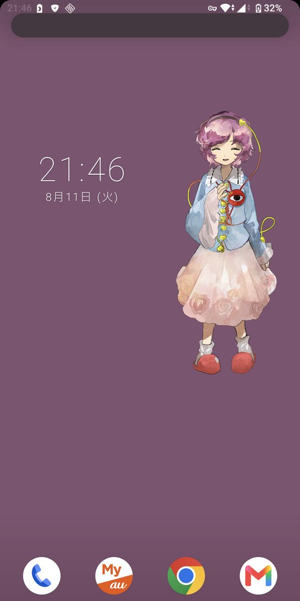
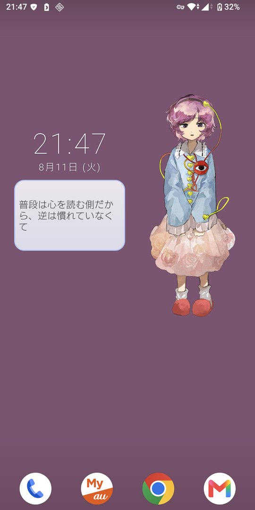
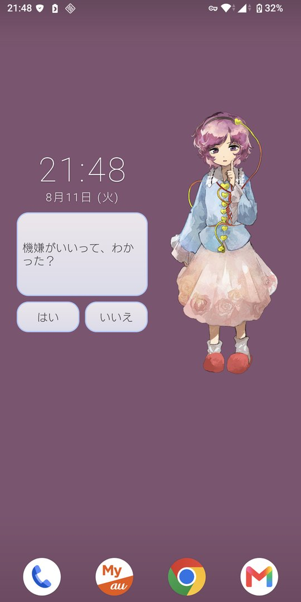
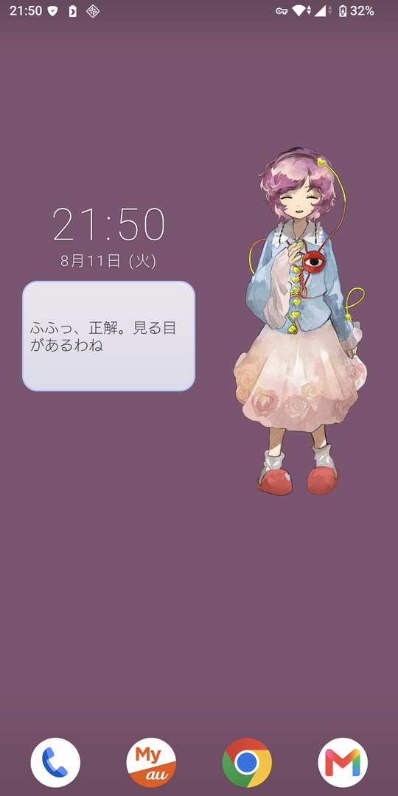

MOVIE




FEATURES
01話すほど、好きになる
会話を重ねると親愛度が上がり、5段階でセリフと態度が変わっていきます。 はじめは素っ気ない相手が、そのうち名前を呼び、そばにいてほしいと言うようになります。 低い親愛度でしか出ない会話もあるので、最初のよそよそしさは今だけのものです。
024,800 以上のセリフ
通常会話に加えて、時刻・日付・曜日・季節・記念日・利用日数・充電状態にも反応します。 朝には朝の、真夜中には真夜中の言葉があり、記念日には記念日の言葉があります。 しばらく放っておいてから触れば「あら、お久しぶり」と言われます。
0314 の表情と 56 種類のボイス
セリフごとに感情が設定されていて、表情がそれに合わせて変わります。 観察・平静・疑問・喜び・慈愛・からかい・得意・照れ・甘え・心配・いたわり・困り・退屈・眠気の14種類。 会話の始まりと終わりには、その感情の声が短く鳴ります。
04はい・いいえで答える
ときどき問いかけられます。答えた内容によって返事が変わり、親愛度も動きます。
05ひとりでに、呟く
タップしなくても、ときどき独り言をこぼします。画面が消えている間は喋りません。
06通信しません
インターネットに接続する機能を持ちません。会話も音声も画像もすべてアプリに入っているので、 オフラインでも動きます。個人情報は一切収集せず、広告も解析ツールも入っていません。 記録されるのは親愛度やタップ回数などで、すべて端末の中だけに保存されます。
HOW TO USE
- アプリをインストールして開きます
-
「ホーム画面に追加」を押します
この機能に対応していないホーム画面では、空いているところを長押ししてウィジェット一覧から「サトリウム」を選んでください - 配置したあと、枠をドラッグして好きな大きさに変えられます
- さとりをタップします
ウィジェットの大きさに合わせて、表示の比率が変わります。 時計と日付も表示され、壁紙の明るさに合わせて文字色が自動で切り替わります。
アプリ本体を開いても会話は始まりません。ウィジェットを置いていないときは 「ホーム画面にサトリウムのウィジェットを追加してください。」という案内が表示されます。
SPEC
- Android 5.0 以上
- 無料 / アプリ内購入なし / 広告なし
- インターネット接続不要